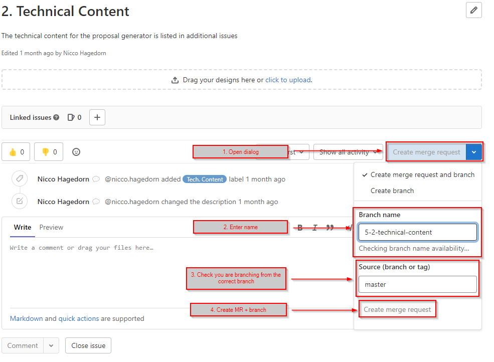
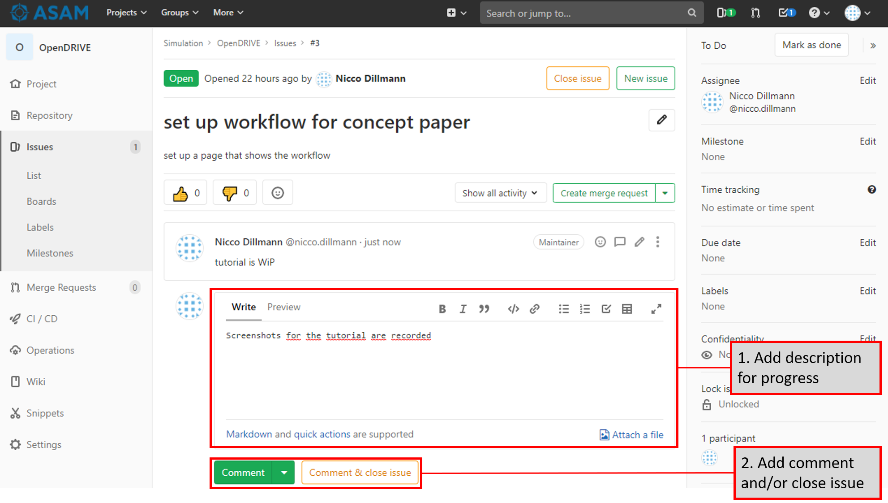

Workflow tutorial for the projects using gitlab
In this tutorial, we will go through the workflow we want to use to create project documents in GitLab.
| Never work on the master branch, always create your own development branch! |
Tooling
To work on the files in your branch, you can either use the Gitlab IDE or a local setup consisting of text editor and Git. For the tools supported by ASAM, see Tools overview.
1. Create development branch
Each topic must be developed in a separate development branch before it is merged to main when ready. Please keep in mind to change only few files at once in one branch to minimize the chance for merge conflicts to occur.
| Give the branch a significant name that describes its intensions. See Branch naming conventions for branch name conventions at ASAM. |
If you want to switch the branch you are viewing and working on, see How to switch branches.
1.1. Create development branch from issue
The recommended way of working is by using issues.
The general idea is: Whenever an issue is opened, a branch is created with it.
Thus, it is possible to work on the issue in an individual branch and merge that branch back to main after the issue is done.
-
Create an issue, using one of the available templates.
-
Fill out the neccessary fields. Keep the size of the issue reasonable, for example by trying to have it cover about 8 hours of work.
-
Open your issue and create your branch from it. Follow the Branch naming conventions for the branch name.
 -
Now, the ticket is created and we can start working on the issue. When working on the issue, document your progress to be able to know when the task is done. Please keep the documentation for the progress short and simple.
 -
If there are open points that need to be discussed with the group, start a new thread in the issue so others can reply to your suggestion or question
A thread in an issue looks like the image below.
-
As soon as the issue is done, create a merge request for the branch to start an internal review.
1.2. Create development branch manually
Alternatively, you can create your branch manually, either through GitLab or locally (if set up).
There a many ways to create a branch in the git process. Two options are highlighted below.
1.2.1. Option 1: Using Visual Studio Code
-
Click on the branch icon on the bottom left
-
Click on "Create New Branch"
-
Enter a new valid branch name and confirm with Enter
You are automatically switched to the new branch.
|
This is a local branch. You need to push it before it is also on the remote. |
1.2.2. Option 2: In GitLab
-
Open an issue for which you want to create a new branch
-
Select "Create branch" from the dropdown menu
Figure 3. create name for new branch -
Enter a new valid branch name
-
Click "Create branch"
The branch is now created on remote.
|
You need to check out this branch locally as this only creates the branch on the server. |
2. Work in your development branch
| If you are using the Gitlab IDE, you can edit the files directly in your browser. |
If you are using a local setup, you can pull, change, stage, commit and push through Git. See the guide on Git interactions for further information on how to work with a repository.
3. Merge all changes back to the main branch
After you are done with your work, create a "merge request" to the main branch.
This is described in Merge a branch.
It is recommended to only merge a development branch once all issues related to it are closed.
Each merge request must be reviewed internally with a simple review before it is allowed to be merged into main in order to minimize mistakes slipping through.
Once a branch is merged into main, its changes are now offical and applied.